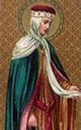

Hertiginna av Austrasia. Blev högst 34 år.
690 Treves, Languedok-Roussillion, France. [1]
724 Triere, Rheinland-Pfalz, Tyskland. [1]
Rotrude (Chrodtrudis) (eller Crotude, Chrotrude eller Ruadtrud; död 724) var den första hustru till Charles Martel , borgmästare i slottet och de facto härskare över Francia från 718 till 741. Hon var mor till Pepin den Korte , kung av frankerna, och därför mormor till Karl den Store . Rotrude tros vara dotter till Lambert, greve av Hesbaye , även om denna beteckning inte är utan kontrovers, som diskuteras nedan. Hon kallas också för Rotrude of Treves.
Traditionellt sett var den tillgängliga informationen om Rotrudes familjebakgrund en indikation på att Wido (Guy), greve av Hornbach och lekmannaabbot av Fontenelle , var en propinquus av Martel. Denna släktskapsterm, vag nog, betyder en nära relation till kvinnor: en bror, en kusin med kvinnor eller en kusin genom äktenskap. Wido är bror till Milo, biskop av Trier , och son till Saint Leudwinus , biskop av Trier .
Christian Settipani , i sitt arbete om Charlemagnes förfäder, beskriver en analys av Anton Halbedel, som först publicerades 1915, och som upprepades av historikerna Joseph Depoin, Maurice Chaume och Szabolcs de Vajay. Enligt denna analys antyder ordet propinquus "bror", så att Wido var Rotrudes bror. Rotrude har därför ofta identifierats som dotter till Saint Leudwinus.
Men i Settipanis tillägg till Charlemagnes förfäder [1] återvänder han till detta problem, och återspeglar tankar hos den medeltida historieprofessorn Richard Gerberding, som trodde att Rotrudes bakgrund var direkt relaterad till Robertianerna . Han noterade att Charles Martel hade tre fruar och att Wido kan vara en släkting till de andra två.
Settipani drar slutsatsen att Rotrude var dotter till Lambert, greve av Hesbaye , och så syster till Robert I, hertig av Neustrien . Dessutom hette Rotruds syster Landrada och var gift med Sigramnus, greve av Hesbaye . Landrada och Sigramnus var föräldrar till Saint Chrodegang , biskop av Metz. Observera att Rotrude och Charles hade en dotter som också hette Landrade, som ofta felaktigt identifieras som Sigramnus hustru. [2]
Rotrude och Charles fick fem barn:
Carloman , borgmästare i slottet
Pepin den Korte , Frankernas kung och Karl den Stores far
Hiltrude , hertiginna gemål av Bayern, gift med Odilo, hertig av Bayern
(kanske) Landrade
(kanske) Auda av Frankrike , gift med Thierry IV, greve av Autun .
Efter Rotruds död 724 gifte sig Charles med Swanachild och fick ett barn Grifo . Charles hade också en älskarinna Ruodhaid som han fick många barn med.